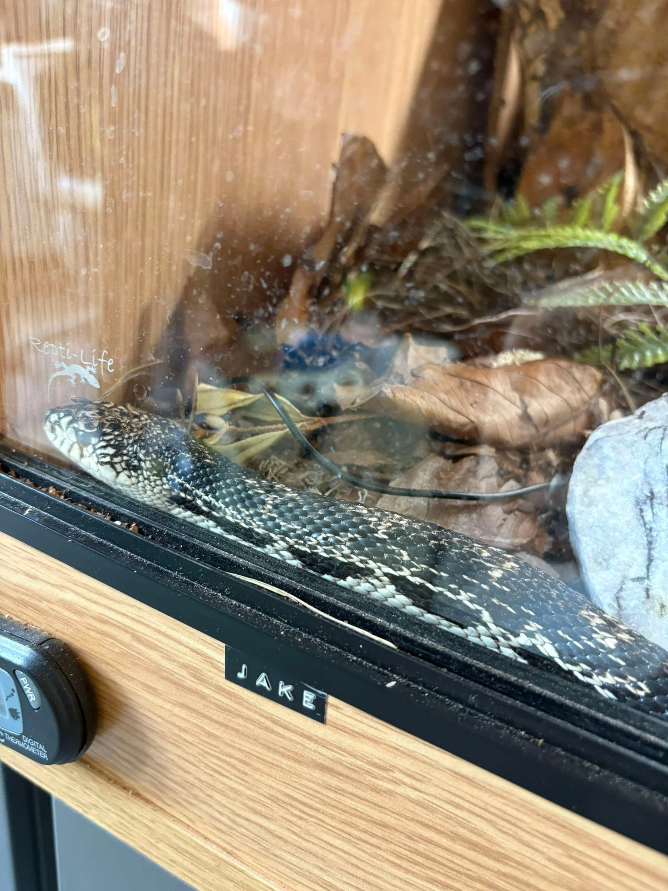

Published 07 July 2025
When it comes to large, confident colubrids, few match the presence of the Northern Pine Snake. Native to the eastern United States, this bold serpent is a true hidden gem in reptile keeping—offering size, intelligence, and character in equal measure.
The Pine Snake (Pituophis melanoleucus) species complex is split into three recognised subspecies:
The Northern Pine Snake is known for its crisp contrast—ivory base scales overlaid with dark blotches that fade towards the tail, giving it an almost pixelated look. Adults often exceed 5–6 feet, with some nearing 7 feet.
Despite a reputation for defensive behaviour, most captive-bred Pine Snakes—especially those handled from a young age—become calm and inquisitive. They are intelligent, food-motivated, and known for their dramatic bluffing behaviour: loud hissing, neck flattening, and head shuffling when startled. But it’s mostly performance—they rarely bite, and their bark is far worse than their bite.
Northern Pine Snakes are active and powerful burrowers. That means their housing should reflect their energy levels and natural habits.
These snakes appreciate multiple hides and will use vertical space when given it. Enrichment like cork bark, tubes, and branches is often utilised.
Pine Snakes are hearty feeders and grow rapidly in their first two years. They thrive on a steady diet of frozen/thawed rodents and will benefit from varied prey as they age.
They can become overweight if overfed, so monitoring weight and feeding schedules is essential—something ReptiCareAI’s upcoming ReptiTrack tool will help with!
Captive breeding of Northern Pines is well established. Females lay large clutches—up to 20 eggs—that incubate at 28–30°C for around 60–70 days. Hatchlings emerge healthy and alert, often eating without issue.
Reputable breeders are key. Avoid wild-caught or poorly kept imports. CB (captive-bred) animals are more predictable and generally have better temperaments.
Pine Snakes have a modified epiglottis that allows them to produce an unusually loud hiss. It's a defensive bluff—but it’s also one of the loudest vocalisations of any snake in North America!
At ReptiCareAI HQ, we’re lucky to work alongside “Jake,” our own Northern Pine ambassador. He’ll be featured in our upcoming TikTok short—so make sure you’re following our socials for behind-the-scenes care tips and reptile content.
The Northern Pine Snake is proof that not all colubrids are created equal. They demand space, respect, and enrichment—but reward it with presence, personality, and peaceful cohabitation.
Got one of your own? Share your setup or questions in the ReptiCareAI community!